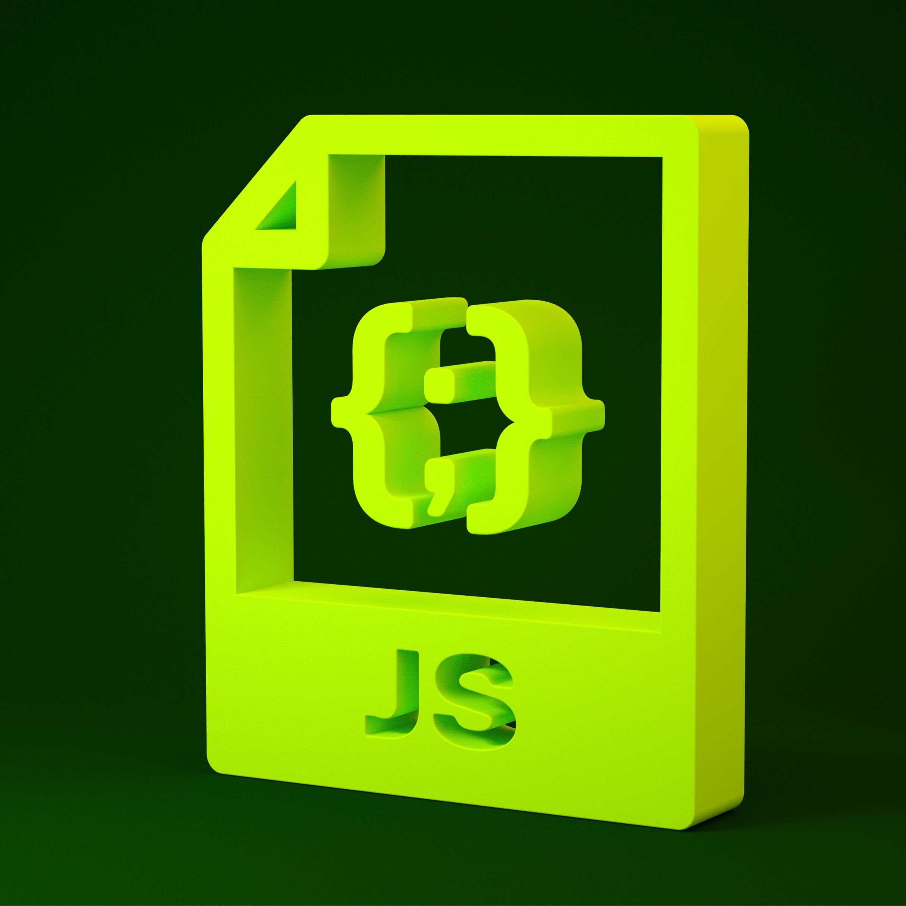

New Features in JavaScript
Posted on January 27, 2024 at 12:00 PM

JavaScript is a dynamic programming language that powers the interactive aspects of web development. In this post, we will explore the latest features in JavaScript, including new APIs, and best practices for modern web development.
1. Optional Chaining
The optional chaining operator ?. allows you to access deeply nested properties of an object without having to check if each reference in the chain is valid. This helps in writing cleaner and more readable code.
Example:
const user = {
profile: {
name: 'John Doe'
}
};
console.log(user.profile?.name); // John Doe
console.log(user.profile?.address?.city); // undefined
2. Nullish Coalescing
The nullish coalescing operator ?? provides a way to handle default values. It returns the right-hand operand when the left-hand operand is null or undefined, making it useful for handling optional values.
Example:
const userInput = null;
const defaultValue = 'Default';
const value = userInput ?? defaultValue;
console.log(value); // Default
3. BigInt
BigInt is a new primitive type that allows you to represent integers larger than the Number.MAX_SAFE_INTEGER. This is useful for dealing with large numbers in JavaScript.
Example:
const largeNumber = 9007199254740991n;
const anotherLargeNumber = BigInt('9007199254740992');
console.log(largeNumber + anotherLargeNumber); // 18014398509481983n
4. Dynamic Import
Dynamic import allows you to load JavaScript modules dynamically and conditionally. It returns a promise, making it suitable for code-splitting and lazy loading.
Example:
if (condition) {
import('./module.js').then(module => {
module.doSomething();
});
}
5. New Promise Methods
JavaScript now includes new promise methods like Promise.allSettled(), Promise.any(), and Promise.race(). These methods provide more flexibility and control over asynchronous operations.
Example:
// Promise.allSettled()
const promises = [
Promise.resolve('Success'),
Promise.reject('Error'),
Promise.resolve('Another success')
];
Promise.allSettled(promises).then(results => {
results.forEach(result => console.log(result.status));
// Output: fulfilled, rejected, fulfilled
});
6. New String Methods
JavaScript has introduced new string methods like String.prototype.replaceAll(), String.prototype.matchAll(), and String.prototype.trimStart()/trimEnd() for more efficient string manipulation.
Example:
const str = 'hello world, hello everyone';
console.log(str.replaceAll('hello', 'hi')); // hi world, hi everyone
7. WeakRefs and FinalizationRegistry
WeakRefs and FinalizationRegistry provide new ways to manage memory and perform cleanup tasks in JavaScript. WeakRefs allow you to hold a weak reference to an object, and FinalizationRegistry lets you register a cleanup callback when an object is garbage collected.
Example:
let object = { data: 'some data' };
const weakRef = new WeakRef(object);
object = null; // Dereference object
console.log(weakRef.deref()); // null (if garbage collected)
8. Top-Level Await
Top-level await allows you to use the await keyword at the top level of a module, making it easier to work with asynchronous code in modules.
Example:
// In a module
const response = await fetch('https://api.example.com/data');
const data = await response.json();
console.log(data);
Conclusion
The latest features in JavaScript make the language more powerful and easier to use. By leveraging these new tools and best practices, you can write cleaner, more efficient, and more maintainable code. Stay up-to-date with the latest developments in JavaScript to take full advantage of these enhancements in your projects.